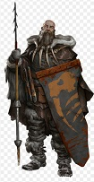
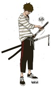
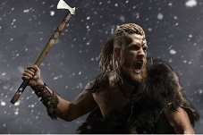
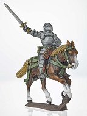

Tribal Wars é um jogo online de navegador (browser) ambientado na idade média. Cada jogador é senhor de uma pequena aldeia, a qual deve ajudar a ganhar poder e glória. É um jogo estilo RPG onde você reune vários jogadores de várias idades e de vários países, você começa com um simples vilarejo, onde vai fazendo alianças e até possívelmente podendo formar uma tribo para combater outros guerreiros e outras tribos conjuntas, você começa em um continente e vai domindo outros jogadores, só assim para você se tornar o mais forte.Esse recurso permitirá você e membros da sua Tribo doem recursos e/ou Coroas em prol do nível de experiência geral da Tribo. Uma vez que sua Tribo tenha ganho pontos de experiência suficientes para evoluir, você receberá um ponto de habilidade para usar na sua árvore de habilidades. As habilidades que seu líder optar por investir ajudarão toda a Tribo!
Lanças:
São Personagens Que se destacam Lutando contra cavalheiros, pois em conjunto podem barrar o avanço de uma cavalaria
São Personagens de defesa, usando para barrar avanço dos barbaros
São Personagens de ataque, contendo um grande poder ofensivo contra o seu inimigo
São Personagens usados tanto para ataque como para defesa
